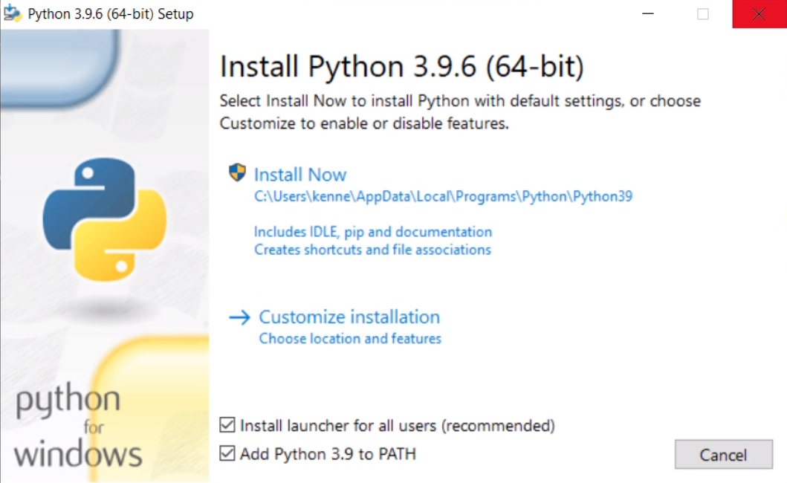
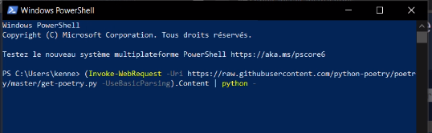

Instructions générales pour l’utilisation des projets
Installation de python
Nous faisons l’hypothèse que vous utilisez une version de Windows 64bits supérieure à la version 7, ou que vous utilisez une distribution récente et à jour basée sur Linux telle que Ubuntu 20, par exemple, à l’heure où nous écrivons ces lignes.
Installation de python sous Windows
Rendez-vous tout d’abord sur le site web de python et télécharger l’exécutable de la dernière version de python (3.9.6 à l’heure d’écriture de ces lignes).
Lancez l’installation classique en cochant bien la case “Add Python 3.9 to PATH”.

Votre installation de python sera alors disponible dans l’invite de commande de Windows ou dans le “powershell”.
Nous vous conseillons l’utilisation du powershell de Windows. En programmation, il est de bonne pratique de pouvoir se servir un minimum de l’invite de commande sous Windows et sous Linux, sans nécessairement avoir d’interface graphique, et ainsi pouvoir réaliser de simples programmes et les exécuter au plus proche de la machine, tout en comprenant vraiment ce que vous faites.
Nous vous invitons donc, si ce n’est déjà fait, à vous renseigner sur les commandes usuelles à utiliser lors d’une session dans l’invite de commande (par exemple : cd, ls, mv, cp, rm, …) qui vous seront très utiles !
Le powershell est facilement accessible depuis Windows. Faites une recherche dans les programmes (au clavier : touche “windows” puis taper “powershell”) et cliquez sur l’icône suivant pour voir le powershell démarrer :

Installation de poetry
Poetry est le gestionnaire de dépendances que nous avons choisi d’utiliser pour les différents exemples de ce livre. Il permet d’exécuter des programmes Python dans un environnement virtuel et gère automatiquement l’installation, la gestion et l’utilisation de ces environnements virtuels. Cela vous permettra de bien isoler les différents projets entre eux (ainsi que leurs dépendances).
Sous Windows
Vous pourrez retrouver les instructions d’installation de poetry sur leur site web.
Il vous suffit pour cela de démarrer le powershell, d’y copier la ligne suivante et d’appuyer sur “entrée”
(Invoke-WebRequest -Uri https://raw.githubusercontent.com/python-poetry/poetry/master/get-poetry.py -UseBasicParsing).Content | python -

Une fois ceci exécuté, il n’y aura plus besoin de le refaire, poetry aura automatiquement été installé et aura détecté votre installation de Python.
Redémarrez ensuite le powershell.
(Si la commande ci-dessus ne fonctionne pas, référez-vous à la documentation du poetry dans la section “Alternative installation methods”.)
Sous Linux
Sous Linux, Python est préinstallé dans la plupart des distributions modernes, nous partons donc du principe que python3 (>3.7) est installé sur votre machine.
Il s’agit ensuite d’installer poetry. Pour cela vous pouvez utiliser les dépôts de votre distribution, par exemple sous ubuntu/debian, entrez dans votre terminal:
sudo apt install poetry
Si poetry n’est pas présent dans les dépôts de votre distribution, vous pouvez l’installer manuellement, en copiant cette ligne dans un terminal de commande (tel que décrit dans la documentation) :
curl -sSL https://raw.githubusercontent.com/python-poetry/poetry/master/get-poetry.py | python3 -
Puis de redémarrer votre terminal.
Fichiers des différents projets
Vous pouvez ensuite vous rendre directement sur le dépot github du livre: AI-book sur github, pour récupérer le dépôt contenant les différents projets.
Télécharger l’archive zip (ou utiliser le gestionnaire de version git) pour récupérer l’ensemble des codes et le placer dans votre dossier principal (par exemple : C:\Users\votrenom ou C:\Users\votrenom\Documents sous windows, ou /home/votrenom/ sous Linux) et enfin désarchivez le (clique droit -> “Extraire tout”)
Ensuite rendez-vous dans le powershell (ou autre terminal) et naviguez jusqu’à ce dossier. Pour ceci, utilisez la commande “cd” suivi du dossier dans lequel vous souhaitez vous rendre (notez que la touche TAB du clavier offre une auto-complétion des commandes de la plus grande utilité !)
Installer et utiliser les projets
Une fois dans le dossier principal, les différents projets s’installent de façon analogue. Il suffit de se rendre dans le dossier du projet (par exemple : “cd 8Puzzle”, depuis le dossier principal).
Puis d’entrer la commande suivante (une seule fois pour chaque projet) :
poetry install
Une fois les dépendances installées et l’environnement créé, vous n’avez plus qu’à exécuter le code de chaque projet à l’aide de la commande “run” de poetry, par exemple pour le Taquin (8 Puzzle) :
poetry run python main.py
sous windows
ou
poetry run python3 main.py
sous Linux